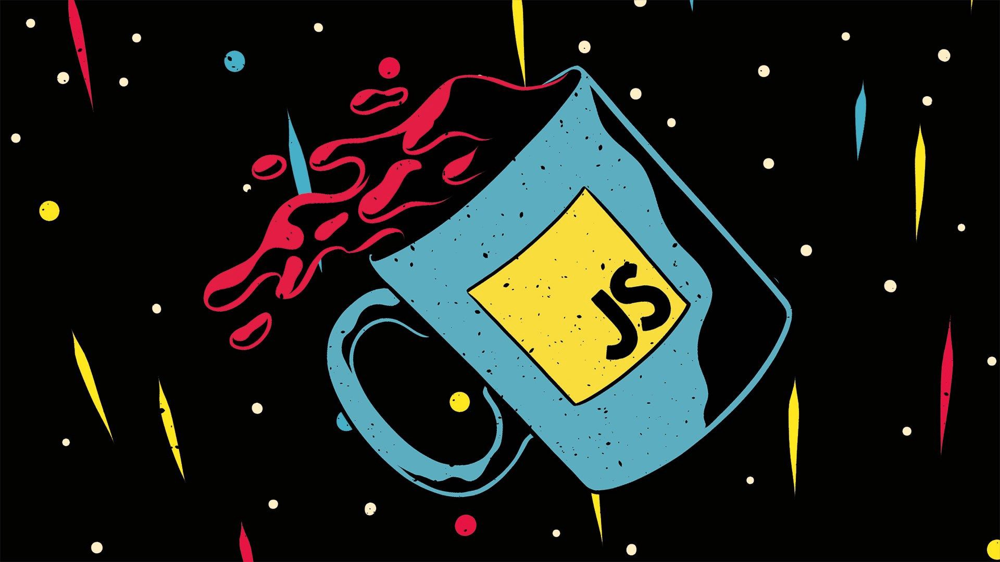

Parallax

<img class="parallax mt-6" src="img/wallpaper.jpg" alt="Wallpaper">
<script>
const img = document.querySelector('.parallax')
document.addEventListener('scroll', event => {
const ypos = window.scrollY
const yimg = img.offsetTop
if (ypos > yimg - window.innerHeight) {
img.style.setProperty('object-position', `50% ${(ypos - yimg) / 2}px`)
}
})
</script>
Scroll suave
<script>
function smoothScroll(id) {
window.scrollTo({
top: document.getElementById(id).offsetTop - 150,
behavior: 'smooth'
})
}
</script>
Cambio de orientación
egestas erat imperdiet sed euismod nisi porta lorem mollis aliquam
<script>
// basado en: https://alvarotrigo.com/blog/scroll-horizontally-with-mouse-wheel-vanilla-java/
const bigText = document.querySelector('.big-text')
const scrolleable = document.querySelector('.scrollable')
window.addEventListener('wheel', event => {
const ypos = window.scrollY
const ytext = bigText.offsetTop
const rect = bigText.getBoundingClientRect()
if (rect.top <= 0 && rect.bottom > document.documentElement.clientHeight) {
console.log(event.deltaY)
scrolleable.scrollBy({
left: event.deltaY,
behavior: 'smooth'
})
}
})
</script>